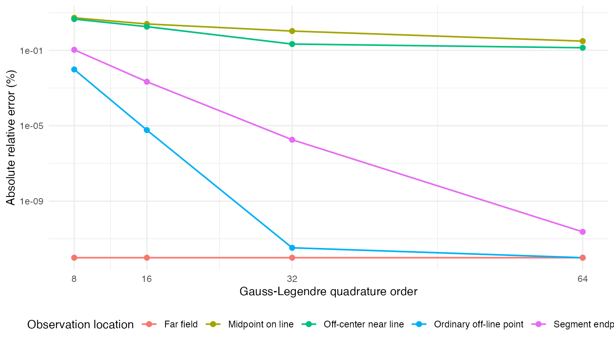
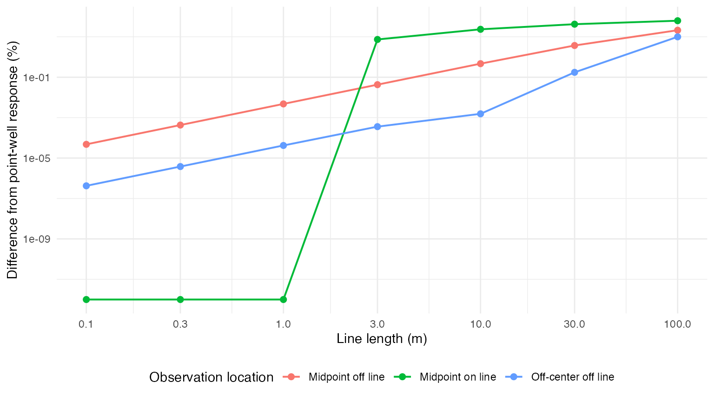

line-sink-numerical-validation.RmdThe finite line-sink calculation uses fixed Gauss–Legendre quadrature. This article compares that calculation with an independent adaptive numerical integration and makes the numerical results visible for review. It is a diagnostic article rather than a pass/fail unit test: the tables and figures show how the approximation changes with quadrature order and observation location.
The comparison uses the package convention that a segment rate is a total volumetric rate. Both calculations therefore evaluate the normalized average response over the line. The stream width supplies an effective minimum radius of half the width.
The reference function below evaluates
where
,
,
and
.
It uses stats::integrate() rather than the Gauss–Legendre
implementation in isw.
adaptive_line_response <- function(
along_distance,
perpendicular_distance,
line_length,
K,
D,
V,
elapsed_time,
stream_width) {
x <- drop_units(set_units(along_distance, "m"))
y <- drop_units(set_units(perpendicular_distance, "m"))
line_length <- drop_units(set_units(line_length, "m"))
K <- drop_units(set_units(K, "m/day"))
D <- drop_units(set_units(D, "m"))
elapsed_time <- drop_units(set_units(elapsed_time, "day"))
minimum_radius <- drop_units(set_units(stream_width, "m")) / 2
diffusivity <- K * D / V
integrand <- function(line_fraction) {
distance <- sqrt((x - line_length * line_fraction)^2 + y^2)
effective_distance <- pmax(distance, minimum_radius)
dimensionless_time <- effective_distance^2 /
(4 * diffusivity * elapsed_time)
-expint::expint_E1(dimensionless_time) / (4 * pi * K * D)
}
reference <- stats::integrate(
integrand,
lower = -0.5,
upper = 0.5,
subdivisions = 2000,
rel.tol = 1e-10,
stop.on.error = TRUE
)$value
set_units(reference, "day/m^2")
}The cases exercise the segment midpoint, an off-center point very near the line, an endpoint, an ordinary off-line location, and the far field. The default 1 m stream width is used throughout so its numerical consequences are visible. The line is 100 m long and centered at the local origin.
hydraulics <- list(
line_length = set_units(100, "m"),
K = set_units(10, "m/day"),
D = set_units(20, "m"),
V = 0.15,
elapsed_time = set_units(10, "day"),
stream_width = set_units(1, "m")
)
cases <- tribble(
~location, ~along_m, ~perpendicular_m,
"Midpoint on line", 0, 0,
"Off-center near line", 20, 0.2,
"Segment endpoint", 50, 2,
"Ordinary off-line point", 20, 20,
"Far field", 0, 500
)
quadrature_orders <- c(8L, 16L, 32L, 64L)
cases
#> # A tibble: 5 × 3
#> location along_m perpendicular_m
#> <chr> <dbl> <dbl>
#> 1 Midpoint on line 0 0
#> 2 Off-center near line 20 0.2
#> 3 Segment endpoint 50 2
#> 4 Ordinary off-line point 20 20
#> 5 Far field 0 500The following chunk is deliberately visible so parameters, cases, and quadrature orders can be changed and rerun during review.
reference_response <- vapply(
seq_len(nrow(cases)),
function(case_index) {
as.numeric(adaptive_line_response(
along_distance = set_units(cases$along_m[[case_index]], "m"),
perpendicular_distance =
set_units(cases$perpendicular_m[[case_index]], "m"),
line_length = hydraulics$line_length,
K = hydraulics$K,
D = hydraulics$D,
V = hydraulics$V,
elapsed_time = hydraulics$elapsed_time,
stream_width = hydraulics$stream_width
))
},
numeric(1)
)
comparison <- tidyr::crossing(
case_index = seq_len(nrow(cases)),
quadrature_order = quadrature_orders
) |>
mutate(
location = cases$location[case_index],
along_m = cases$along_m[case_index],
perpendicular_m = cases$perpendicular_m[case_index],
reference_day_per_m2 = reference_response[case_index],
quadrature_day_per_m2 = vapply(
seq_len(n()),
function(result_index) {
as.numeric(isw:::.line_sink_aquifer_drawdown_ratio(
along_distance = set_units(along_m[[result_index]], "m"),
perpendicular_distance =
set_units(perpendicular_m[[result_index]], "m"),
line_length = hydraulics$line_length,
K = hydraulics$K,
D = hydraulics$D,
V = hydraulics$V,
t = hydraulics$elapsed_time,
stream_width = hydraulics$stream_width,
quadrature_order = quadrature_order[[result_index]]
))
},
numeric(1)
),
absolute_error_day_per_m2 =
abs(quadrature_day_per_m2 - reference_day_per_m2),
relative_error_percent = 100 * absolute_error_day_per_m2 /
abs(reference_day_per_m2)
) |>
select(-case_index)The full table retains the signed response values as well as absolute and relative errors.
comparison |>
mutate(across(
c(
reference_day_per_m2,
quadrature_day_per_m2,
absolute_error_day_per_m2,
relative_error_percent
),
~ signif(.x, 6)
)) |>
knitr::kable()| quadrature_order | location | along_m | perpendicular_m | reference_day_per_m2 | quadrature_day_per_m2 | absolute_error_day_per_m2 | relative_error_percent |
|---|---|---|---|---|---|---|---|
| 8 | Midpoint on line | 0 | 0.0 | -0.0017820 | -0.0016877 | 9.43e-05 | 5.2896900 |
| 16 | Midpoint on line | 0 | 0.0 | -0.0017820 | -0.0017374 | 4.46e-05 | 2.5024100 |
| 32 | Midpoint on line | 0 | 0.0 | -0.0017820 | -0.0017633 | 1.87e-05 | 1.0497900 |
| 64 | Midpoint on line | 0 | 0.0 | -0.0017820 | -0.0017765 | 5.50e-06 | 0.3073010 |
| 8 | Off-center near line | 20 | 0.2 | -0.0017188 | -0.0016410 | 7.77e-05 | 4.5217700 |
| 16 | Off-center near line | 20 | 0.2 | -0.0017188 | -0.0016878 | 3.09e-05 | 1.7993400 |
| 32 | Off-center near line | 20 | 0.2 | -0.0017188 | -0.0017151 | 3.70e-06 | 0.2149080 |
| 64 | Off-center near line | 20 | 0.2 | -0.0017188 | -0.0017211 | 2.40e-06 | 0.1367830 |
| 8 | Segment endpoint | 50 | 2.0 | -0.0012315 | -0.0012328 | 1.30e-06 | 0.1065870 |
| 16 | Segment endpoint | 50 | 2.0 | -0.0012315 | -0.0012315 | 0.00e+00 | 0.0021557 |
| 32 | Segment endpoint | 50 | 2.0 | -0.0012315 | -0.0012315 | 0.00e+00 | 0.0000018 |
| 64 | Segment endpoint | 50 | 2.0 | -0.0012315 | -0.0012315 | 0.00e+00 | 0.0000000 |
| 8 | Ordinary off-line point | 20 | 20.0 | -0.0013024 | -0.0013023 | 1.00e-07 | 0.0096449 |
| 16 | Ordinary off-line point | 20 | 20.0 | -0.0013024 | -0.0013024 | 0.00e+00 | 0.0000059 |
| 32 | Ordinary off-line point | 20 | 20.0 | -0.0013024 | -0.0013024 | 0.00e+00 | 0.0000000 |
| 64 | Ordinary off-line point | 20 | 20.0 | -0.0013024 | -0.0013024 | 0.00e+00 | 0.0000000 |
| 8 | Far field | 0 | 500.0 | -0.0000006 | -0.0000006 | 0.00e+00 | 0.0000000 |
| 16 | Far field | 0 | 500.0 | -0.0000006 | -0.0000006 | 0.00e+00 | 0.0000000 |
| 32 | Far field | 0 | 500.0 | -0.0000006 | -0.0000006 | 0.00e+00 | 0.0000000 |
| 64 | Far field | 0 | 500.0 | -0.0000006 | -0.0000006 | 0.00e+00 | 0.0000000 |
This compact table makes convergence by quadrature order easier to compare.
comparison |>
select(location, quadrature_order, relative_error_percent) |>
mutate(relative_error_percent = signif(relative_error_percent, 5)) |>
pivot_wider(
names_from = quadrature_order,
values_from = relative_error_percent,
names_prefix = "order_"
) |>
knitr::kable(
caption = "Absolute relative error (%) compared with adaptive integration"
)| location | order_8 | order_16 | order_32 | order_64 |
|---|---|---|---|---|
| Midpoint on line | 5.2897000 | 2.5024000 | 1.0498000 | 0.30730 |
| Off-center near line | 4.5218000 | 1.7993000 | 0.2149100 | 0.13678 |
| Segment endpoint | 0.1065900 | 0.0021557 | 0.0000018 | 0.00000 |
| Ordinary off-line point | 0.0096449 | 0.0000059 | 0.0000000 | 0.00000 |
| Far field | 0.0000000 | 0.0000000 | 0.0000000 | 0.00000 |
ggplot(
comparison,
aes(
x = quadrature_order,
y = pmax(relative_error_percent, 1e-12),
color = location
)
) +
geom_line(linewidth = 0.7) +
geom_point(size = 2) +
scale_x_continuous(breaks = quadrature_orders) +
scale_y_log10() +
labs(
x = "Gauss-Legendre quadrature order",
y = "Absolute relative error (%)",
color = "Observation location"
) +
theme_minimal() +
theme(legend.position = "bottom")
isw currently uses order 16 by default. This table
isolates that order so its approximation error can be reviewed directly
before deciding whether the default should change.
comparison |>
filter(quadrature_order == 16L) |>
transmute(
location,
along_m,
perpendicular_m,
reference_day_per_m2 = signif(reference_day_per_m2, 7),
quadrature_day_per_m2 = signif(quadrature_day_per_m2, 7),
relative_error_percent = signif(relative_error_percent, 5)
) |>
knitr::kable()| location | along_m | perpendicular_m | reference_day_per_m2 | quadrature_day_per_m2 | relative_error_percent |
|---|---|---|---|---|---|
| Midpoint on line | 0 | 0.0 | -0.0017820 | -0.0017374 | 2.5024000 |
| Off-center near line | 20 | 0.2 | -0.0017188 | -0.0016878 | 1.7993000 |
| Segment endpoint | 50 | 2.0 | -0.0012315 | -0.0012315 | 0.0021557 |
| Ordinary off-line point | 20 | 20.0 | -0.0013024 | -0.0013024 | 0.0000059 |
| Far field | 0 | 500.0 | -0.0000006 | -0.0000006 | 0.0000000 |
A finite line carrying a fixed total volumetric rate should approach a point well at the line midpoint as the line length approaches zero. This comparison is also sensitive to an incorrect linear-rate convention: multiplying by line length, rather than using total segment rate, would prevent convergence to the point-well response shown here.
The point-well reference uses well_diam = 1 m, matching
the line calculation’s stream_width = 1 m. The off-line
midpoint case isolates perpendicular distance, the off-center case
includes both coordinate directions, and the on-line case exercises the
common minimum-radius treatment.
short_line_cases <- tribble(
~location, ~along_m, ~perpendicular_m,
"Midpoint off line", 0, 20,
"Off-center off line", 20, 20,
"Midpoint on line", 0, 0
)
line_lengths_m <- c(100, 30, 10, 3, 1, 0.3, 0.1)
short_line_convergence <- tidyr::crossing(
case_index = seq_len(nrow(short_line_cases)),
line_length_m = line_lengths_m
) |>
mutate(
location = short_line_cases$location[case_index],
along_m = short_line_cases$along_m[case_index],
perpendicular_m = short_line_cases$perpendicular_m[case_index],
point_distance_m = sqrt(along_m^2 + perpendicular_m^2),
point_response_day_per_m2 = vapply(
seq_len(n()),
function(result_index) {
as.numeric(isw:::.theis_aquifer_drawdown_ratio(
distance = set_units(point_distance_m[[result_index]], "m"),
K = hydraulics$K,
D = hydraulics$D,
V = hydraulics$V,
t = hydraulics$elapsed_time,
well_diam = hydraulics$stream_width
))
},
numeric(1)
),
line_response_day_per_m2 = vapply(
seq_len(n()),
function(result_index) {
as.numeric(isw:::.line_sink_aquifer_drawdown_ratio(
along_distance = set_units(along_m[[result_index]], "m"),
perpendicular_distance =
set_units(perpendicular_m[[result_index]], "m"),
line_length = set_units(line_length_m[[result_index]], "m"),
K = hydraulics$K,
D = hydraulics$D,
V = hydraulics$V,
t = hydraulics$elapsed_time,
stream_width = hydraulics$stream_width,
quadrature_order = 16L
))
},
numeric(1)
),
relative_difference_percent = 100 *
abs(line_response_day_per_m2 - point_response_day_per_m2) /
abs(point_response_day_per_m2)
) |>
select(-case_index)
short_line_convergence |>
transmute(
location,
line_length_m,
point_response_day_per_m2 = signif(point_response_day_per_m2, 7),
line_response_day_per_m2 = signif(line_response_day_per_m2, 7),
relative_difference_percent = signif(relative_difference_percent, 5)
) |>
knitr::kable()| location | line_length_m | point_response_day_per_m2 | line_response_day_per_m2 | relative_difference_percent |
|---|---|---|---|---|
| Midpoint off line | 0.1 | -0.0017201 | -0.0017201 | 0.0000478 |
| Midpoint off line | 0.3 | -0.0017201 | -0.0017201 | 0.0004305 |
| Midpoint off line | 1.0 | -0.0017201 | -0.0017200 | 0.0047821 |
| Midpoint off line | 3.0 | -0.0017201 | -0.0017194 | 0.0429740 |
| Midpoint off line | 10.0 | -0.0017201 | -0.0017120 | 0.4695300 |
| Midpoint off line | 30.0 | -0.0017201 | -0.0016561 | 3.7216000 |
| Midpoint off line | 100.0 | -0.0017201 | -0.0013549 | 21.2290000 |
| Off-center off line | 0.1 | -0.0014473 | -0.0014473 | 0.0000004 |
| Off-center off line | 0.3 | -0.0014473 | -0.0014473 | 0.0000038 |
| Off-center off line | 1.0 | -0.0014473 | -0.0014473 | 0.0000420 |
| Off-center off line | 3.0 | -0.0014473 | -0.0014473 | 0.0003591 |
| Off-center off line | 10.0 | -0.0014473 | -0.0014473 | 0.0015473 |
| Off-center off line | 30.0 | -0.0014473 | -0.0014448 | 0.1747900 |
| Off-center off line | 100.0 | -0.0014473 | -0.0013024 | 10.0090000 |
| Midpoint on line | 0.1 | -0.0046527 | -0.0046527 | 0.0000000 |
| Midpoint on line | 0.3 | -0.0046527 | -0.0046527 | 0.0000000 |
| Midpoint on line | 1.0 | -0.0046527 | -0.0046527 | 0.0000000 |
| Midpoint on line | 3.0 | -0.0046527 | -0.0043079 | 7.4097000 |
| Midpoint on line | 10.0 | -0.0046527 | -0.0035559 | 23.5730000 |
| Midpoint on line | 30.0 | -0.0046527 | -0.0026899 | 42.1870000 |
| Midpoint on line | 100.0 | -0.0046527 | -0.0017374 | 62.6580000 |
ggplot(
short_line_convergence,
aes(
x = line_length_m,
y = pmax(relative_difference_percent, 1e-12),
color = location
)
) +
geom_line(linewidth = 0.7) +
geom_point(size = 2) +
scale_x_log10(breaks = rev(line_lengths_m)) +
scale_y_log10() +
labs(
x = "Line length (m)",
y = "Difference from point-well response (%)",
color = "Observation location"
) +
theme_minimal() +
theme(legend.position = "bottom")
For each location, the relative difference should decrease toward zero as the line becomes short relative to the observation distance or the shared minimum radius.
These results should be interpreted in the context of the model’s intended accuracy and computational cost. In particular, the on-line and near-line cases are intentionally demanding because a fixed quadrature rule may not place a source point inside the narrow width-regularized region.